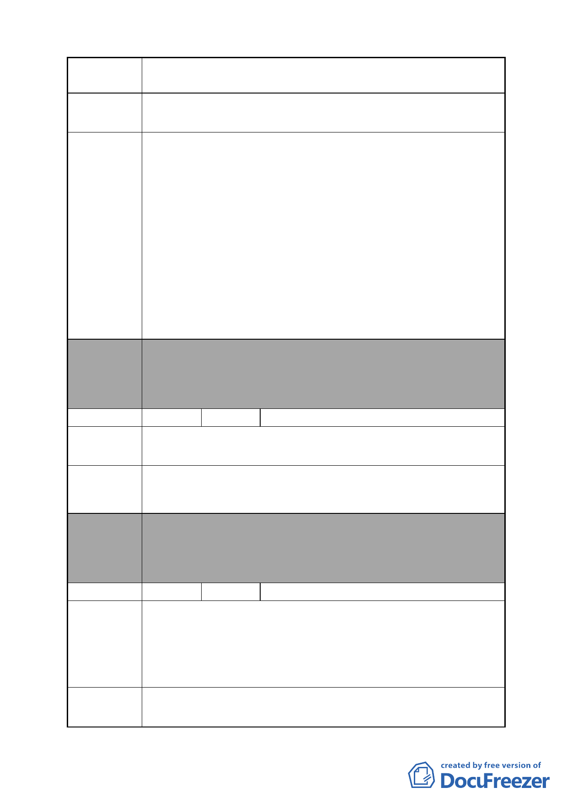

案名
變更臺北市南港區鐵路地下化沿線土地主要計畫案
絕對之影響。
建議辦法
委員會
決議
編號
陳情理由
1.保留與向陽路接臨土地及建築，供原居住者使用。
2.原地發還（如政府一定要開發），應以下列 5 點為前提：
（1）以自辦重劃為基準。
（2）區內國營事業土地不得調高現值。
（3）百姓土地公告現值應調高，如以現金補償，應以不少於
土地公告現值之 3 倍為準（參照目前市況）。
（4）本地住戶容積率應調高，以 500％為基礎，避免民眾損
失太大。
（5）地上建物補償，應以目前當地房屋銷售市價扣除土地補
償為準，且不得低於目前公定補償市價之 3 倍（目前補
償標準似與現實相差太遠，外界傳言，甚至每坪建物僅
補償 5 萬元）。
本案除文字誤繕應再作修正外，其餘依市府本次會議所送修
正計畫書內容通過。
（市府本次會議所送修正計畫書，業將陳情地點剔除於市地
重劃範圍）
6 陳情人 陳學忠
初期計畫，地點零散，疑有圖利財團之嫌。
應以南港站周邊擴大，詳列使用分區，或以忠孝東路及南港
建議辦法 路為軸線，應較為妥善，以杜悠悠之口。
委員會
決議
編號
陳情理由
建議辦法
本案除文字誤繕應再作修正外，其餘依市府本次會議所送修
正計畫書內容通過。
（本案依市府本次會議所送修正計畫書，原則係以公有、國
營事業及私有刻正申辦都市計畫變更之街廓為計畫範圍）
7 陳情人 高闕蕊
1.陳情地點：南港區玉成段二小段 0800-0000 地號（南港區昆
陽街 60 巷 6-1 號 3 樓）
2.本樓（6 號、6-1 號、8 號、8-1 號）於 82 年 8 月完工，才短
短 15 年，屬完工沒多久的廠辦大樓。重劃對權益人造成重
大損失，擾民且引發民怨，實在不宜變更重劃。
本樓所屬地不要納入變更重劃範圍。
- 23 -